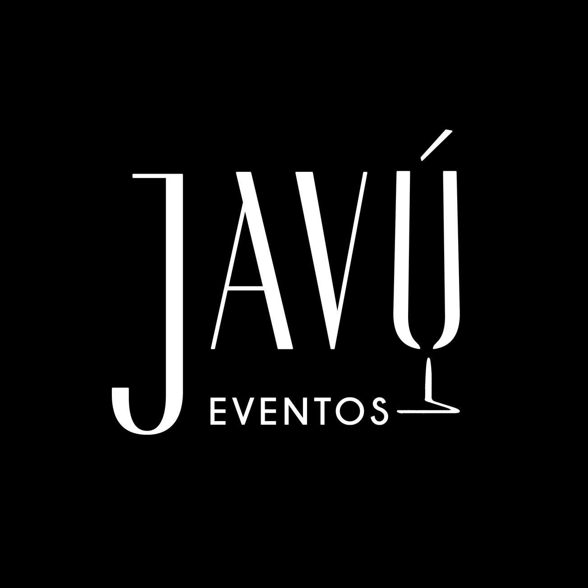
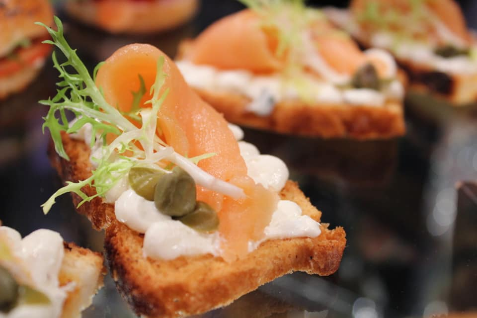
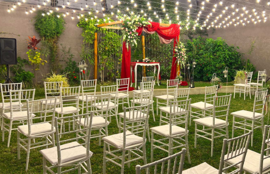
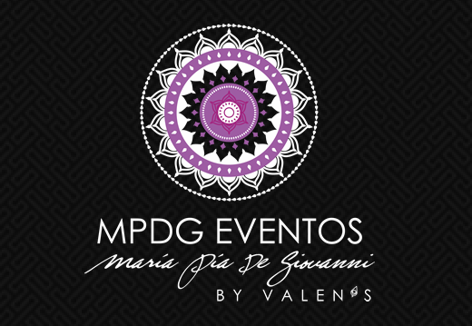

¿Cómo comenzó todo?
28 de Abril del 2022

Cuando decidimos casarnos fue todo un tema. Recién habíamos salido de la pandemia, la idea original siempre había sido hacerlo aproximadamente 2020/2021, pero no llegamos. En principios de 2022 ya estaba todo mucho mas estable, ya todo estaba abierto, y empezamos a ver salones y presupuestos para el casamiento. En un inicio iba a ser un casamiento "de tarde", desestructurado, con poca gente. Después negociamos (Nico quería algo mas grande) y cuando conocimos el salón nos terminamos de decidir: Iba a ser un casamiento de noche, con ceremonia al exterior y aún asi iba a tener nuestra impronta de originalidad. En Abril 2022 tuvimos la primera reunión y firmamos el contrato con el salón, ya teniamos un pie dentro. Ahora restaba manejar la ansiedad de esperar para poder contratar el resto de los servicios, y maquinarnos la cabeza de qué íbamos a querer y qué no
But first, food
2 de Marzo del 2023

Casi un año después, empezamos a averiguar por los caterings, siendo Pablo Analista gastronónmico y pastelero, sabíamos las expectativas que eso iba a generar, asi que no escatimamos en buscar y buscar caterings, hasta que conseguimos el que nos deslumbró. En Marzo tuvimos una primera reunión con Anahel, y en Abril nos invitó a una degustación que hicieron, y nos encantó, la calidad de la comida fresca, la variedad de platos, las islas para la recepción, la mesa dulce, todo había estado tan bien armado, y era todo tan rico, que antes de salir le dimos la mano a Anahel y dijimos "Es por acá". ¡Ya queremos que lo experimenten ustedes también! Nos quedamos pensando... ¿Podremos hacer una nueva degustación antes de la fiesta? ;)
Una boda creativa...
6 de Marzo del 2023

Cuando visitamos el salón, un año atrás, y pudimos ver la parte exterior, supimos que íbamos a hacer una ceremonia. Más adelante, cuando contratamos a las Wedding Planner nos preguntaron "Chicos, importante, ¿Ceremonia? Obvio, ¿No?" y fue un SÍ rotundo. Mas allá de que la fecha sea invierno, hacerla afuera nos pareció un planazo, nada que un abriguito no solucione. Ahora, necesitamos quién oficie esa ceremonia, y sabíamos que queríamos algo distinto, original, never-seen, groundbreaking, iconic. Gracias a la página de casamientos encontramos a Damián, que se encarga de hacer bodas creativas. No vamos a contar nada más! Me están echando byeee.
Is this the real life ? Is this just fantasy?
20 de Abril del 2023

Salón, checked. Comida, checked. Ceremonia, checked. Check, checked. Ahora faltaba algo importante, la ambientación. Los que hayan venido a nuestros cumpleaños saben que la ambientación es parte crucial de nuestros eventos. La boda (the ultimate event) no podía ser distinto. Asi que para eso decidimos buscar y contratar a las mejores en eso. Fue así que nos decubrimos a Pía y Yani, de MPDG. Ellas se encargaron de organizarnos las ideas, abrirnos la mente y agarrar todas nuestras impresiones de pinterest y darles forma. "Se viene un fiestón", palabras textuales de Pía. No diré mas...
Subir